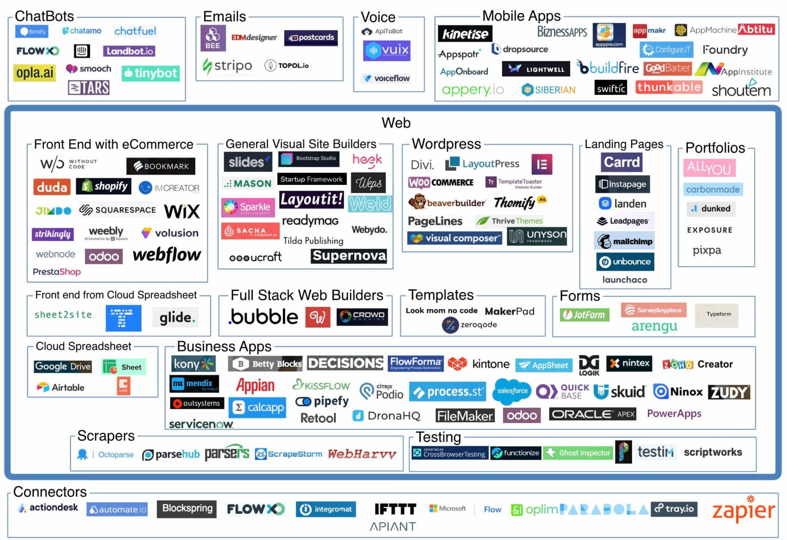
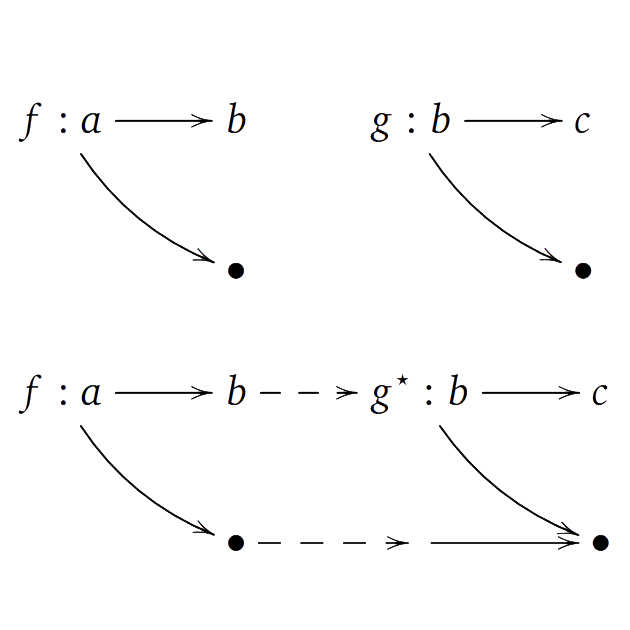

NPRG075
Making programming
easier and learnable
Tomáš Petříček, 204 (2nd floor)
petricek@d3s.mff.cuni.cz
https://tomasp.net | @tomaspetricek
Lectures: Tuesday 12:20, S6
https://d3s.mff.cuni.cz/teaching/nprg075

Course feedback

What do you think
- I would love to hear from you!
- tinyurl.com/nprg075-feedback
Some things to consider
- Topics covered in the course?
- Conventional lecture format?
- Alternatives to assignment?
Introduction
Programming for non-programmers
What & why
Programming for non-programmers
- Augmenting human intellect research theme
- Reducing costs of programming for businesses
- Computer science & general education
- Thinking about how to think when programming!
Computational thinking
Is that teaching everyone to code?
What to teach and
how to best do it?
Designing languages for education?

LOGO (1967)
Characteristics of the era
Not just a programming language for kids
Computer environment: people, things, ideas
Computer culture: a way of thinking about thinking

No-code and
low-code
Platforms for creating applications with minimal code
A new take on end-user programming
FLOW-MATIC
High-level business oriented predecessor of COBOL (1957)
Makes coding so easy your company will not need programmers!
Methodology
Programming for non-programmers
- Metaphors for explaining programming
- Cognitive models to understand human thinking
- Finding more manageable kinds of interactions
- Understanding & assisting with common errors
End-user programming
Making programming super easy
A small matter of programming

End-user programming (1993)
-
Spreadsheets, CAD systems,
statistical packages - Task specific systems
An elusive dream?
- Can anyone become a programmer?
- Beyond task-specific?
- Programmable end-user systems?

End-user programming
① Very high-level
Domain-specific languages
② Spreadsheets
CAD & statistical systems
③ User interaction
New kinds of specifying

High-level languages
FLOW-MATIC (1960s)
English; easily taught to clerical workers
DSLs (2000s)
Small languages for specific problems
Low-code (2020s)
GUI-based entire
app development

Case study: Darklang
Domain-specific abstractions for server-less backends
- HTTP handler
- Worker
- Database
- CRON job
Notations
Limits of high-level notations
- Requires a "tidy" problem domain
- There is no universal language
- Adaptable notations tend to be complex
- Cannot (should not?) accept human vagueness
What makes programming hard?

Cognitive obstacles
-
Loss of direct manipulation
(and the frame problem) - Use of (specialized) notation
- Abstraction for complexity
Attention investment model
- Cognitive obstacles have cost
- Programming as an investment
- When is the gain worth it?
Eliminating cognitive obstacles
-
Spreadsheet-based interfaces
Avoid abstraction and give immediate feedback -
Programming by example
No need for notation and abstraction -
Direct manipulation
Manipulate concrete entities & post-hoc abstraction
Spreadsheets as programming

Are they really programming?
- Domain-specific, but powerful
- Turing-complete (in a way)
- Lambdas, macros, extensions
Spreadsheets & programming
- IDEs can learn about liveness
- Spreadsheets can learn about software engineering
- TechDims: Abstraction construction, feedback loops

General-purpose spreadsheets?
(Marasoiu, 2019)
Spreadsheet-based data visualization
Spreadsheet interface for constructing custom charts
What else could we express this way?
Direct manipulation
Complete task manually, have computer repeat it
Industrial robots, graphics editing, task automation, geometry, formatting
How to allow for small variation in behaviour?

Wrangler
(Kandel et al, 2011 )
Data wrangling by direct manipulation
User cleans with data
System builds a script
Attempts to generalize concrete interactions
Programming by example

FlashFill and FlashExtract
- Write (or select) examples
- System infers patterns
- Refine examples to clarify
Implementation
- Synthesize programs to match
- Using carefully chosen small language
- And a suitable search algorithm
Education
Teaching programming & thinking
MIT Artificial Intelligence Lab
Minsky & Papert
"Seymour Papert and Marvin
Minsky thought about thinking,
about children's thinking and
about machine's thinking."
LOGO project & language
- Computers as "native speakers" of mathematics
- Teach creative and logical thinking
- Giving children tools to learn (Montessori)
LOGO as a language
Language features
- Interactive and LISP-inspired
- Lists, recursion, functional
- More of an idea than a language
LOGO for education
- Learning through microworlds
- Give kids the most powerful language created
- Powerful ideas: anthropomorphization, metalanguage
TO NOUN
OUTPUT PICK [BIRDS DOGS ..]
END
TO VERB
OUTPUT PICK [HATE BITE LOVE]
END
TO ADJECTIVE
OUTPUT PICK [RED PECULIAR ..]
END
PRINT (SENTENCE ADJECTIVE
NOUN VERB ADJECTIVE NOUN)
Microworlds
A small domain-specific language for exploring ideas
Turtle graphics is best known example
First LOGO example was for word plays
Turtle microworld
On-screen and floor robots
Great for teaching
Debug by pretending to be the turtle & follow program
Does not blame students ("the turtle has a bug")
Computer science education
Teaching programming thinking today
- From 1960s idealism to 2020s pragmatism
- Focus on what we can convincingly study
- Improving teaching practices & methods
- Developing better conceptual frameworks
Notional machines

Models for thinking
- Model of a computer operation
- Helps understand computation
- A "useful lie" for teaching
Example notional machines
- Objects and message passing of Smalltalk
- LOGO "little people" metaphor
- Computation as railway track
Little people metaphor
A powerful idea for understanding how programs work
Function instantiation as a "little men" doing (one step of) work

Linked lists (1/2)
Boxes with pointers as connecting arrows
Let's insert 3 in the list between 2 and 4...

Linked lists (2/2)
Boxes with pointers as connecting arrows
Let's insert 3 in the list between 2 and 4...
Useful but does not explain everything that pointers can do!
Computing education
Basic disagreements about the problem
- Computational thinking & algorithms for all?
- Creativity as with LOGO and Sonic Pi?
- History and philosophical problems?
- How to best teach present-day technology?
Metaphors
Thinking about programming
Metaphors for programming

Essence of human thought?
- Time as resource, Up as positive, ...
- Apparent through our language
- Basic for constructing mathematics?
- Each has fits and misfits
Metaphors for programming
- Notional machines (LISP, Smalltalk)
- Thinking about variables, monads
Two metaphors for variables
Variable as a box
- You store value in a box
- Variable "contains" a value
- What is stored in a
name?
Variable as a label
- Label you place on a value
- Variable "is" a value
- What is a
name?
Misconceptions
Does the metaphor for variables matter?
- What is the meaning of multiple assignment?
- Box can contain multiple values!
- Label will be for computation or addition
- Box metaphor wins, but beware of misfits
class Monad m where
(>>=) ::
m a -> (a -> m b) -> m b
return ::
a -> m a
Metaphors for monads
Interface capturing a class of computations
Used for effectful computations in Haskell
How programmers
think about them?
Three metaphors for monads
Symbolic
Meaningless symbolical entity satisfying laws
Box
Container that can be transformed and un-nested

Track
Computation that can proceed in multiple ways

Misconceptions
Common errors in thinking
- Loops terminate when condition turns false
- Sequential statements do not wait
- Variable name has effect on its behaviour
- Missing else branch stops program
Conclusions
Easier and learnable
Thank you!
Please do keep in touch!
- Do a final project (and get credit as a bonus)
- Sign-up for a follow-up seminar
- Get in touch about MSc or PhD projects
Tomáš Petříček, 204 (2nd floor)
petricek@d3s.mff.cuni.cz
https://tomasp.net | @tomaspetricek
https://d3s.mff.cuni.cz/teaching/nprg075
References (1/3)
End-user programming
- UNIVAC FLOW-MATIC (1957). Introducing a new language for automatic programming. Sperry Rand Corporation
- Bonnie A. Nardi (1993). A Small Matter of Programming. MIT
- Blackwell, A. F. (2002). First Steps in Programming: A Rationale for Attention Investment Models. VL/HCC
- Blackwell, A.F., Burnett, M. (2002). Applying Attention Investment to End-User Programming. VL/HCC
Spreadsheets
- Marasoiu, M. et al. (2019). Cuscus: An End User Programming Tool for Data Visualisation. IS-EUD
References (2/3)
Programming by demonstration
- Smith, D. C. (1977). Pygmalion: A Computer program to Model and Stimulate Creative Thought. ISR
- Kandel, S., et al. (2011). Wrangler: Interactive Visual Specification of Data Transformation Scripts. CHI
- Cypher A (ed.) (1993). Watch What I Do: Programming by Demonstration. MIT
Programming by example
- Gulwani, S. et al. (2016). Programming by Examples. DSSE
- Vu Le, Gulwani S. (2014). FlashExtract: A Framework for Data Extraction by Examples. PLDI
References (3/3)
Programming education
- Solomon, C. et al. (2020). History of LOGO. HOPL
- Papert S. (1980). Mindstorms: Childern, Computers and Powerful Ideas. Basic Books
- Fincher, S. A. & Robins A. V. (eds.) (2019). The Cambridge Handbook of Computing Education Research. Cambridge
Metaphors & misconceptions
- Lakoff, G. & Nunez, R. (2001). Where Mathematics Come From
- Petricek, T. (2018). What we talk about when we talk about monads
- Hermans, F. et al. (2018). Thinking out of the box: comparing metaphors for variables in programming education. WiPSCE
- Swidan, A. et al. (2018). Programming Misconceptions for School Students. ICER